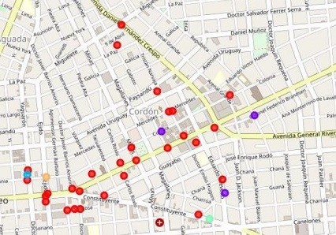

Where to open a restaurant?
Overview
In this project we will try to find an optimal location for a restaurant. Specifically, this report will be targeted to stakeholders interested in opening a restaurant in Montevideo, Uruguay.
We will first analyze the neighborhoods to identify the median income and total population in order to create a ranking based on these metrics.
Then we will try to detect which neighborhood has the least number of food venues and from there we will choose a location that is not already too crowded with restaurants.
We will use our data science skills to generate a few most promising neighborhood based on these criteria.
Link to the Jupyter Notebook with the code (GitHub)
Table of Contents
1. Files Description:
Capstone_Final Project.ipynb:The Jupyter Notebook with the projects’ code.barrios.geojson:The updated json file with the latitude and longitude of each Montevideo neighborhoods’ center.ingresos.csv:The Montevideo income raw data segmented by neighborhood.poblacion.csv:The Montevideo population raw data segmented by neighborhood.Capstone Report.pdf:The pdf with the projects’ report detailing the steps, data sources and methodology.
2. Technologies Used:
- Jupyter Notebooks
- Python (numpy, pandas, json, geopy, matplotlib, sklearn, folium)
- GitHub (data files storage)
- Excel (data sources)
3. Data Sources:
- Median income by neighborhood: National Statistics Institute data repository.
- Population by neighborhood: National Statistics Institute data repository.
- Segmentation of the neighborhoods within the city: GitHub repository.
- Restaurants’ type and location by neighborhood: Foursquare API.
4. Methodology:
In this project we directed our efforts on finding a neighborhood in Montevideo that has a high median income, a high population, and a low number of food venues.
We limited our analysis to areas 800 meters around the neighborhood center as defined by the geospatial coordinates in the json file.
- In the first step we collected the required data: population and median income by neighborhood.
- In the second step in our analysis we calculated and explored the number of ‘food venues’ in the top neighborhoods defined in the first step.
- In the third and final step we focused on the best neighborhood and created clusters of locations of food venues.
We created clusters (using k-means clustering) of those locations to identify general zones which should be a starting point for final ‘street level’ exploration and search for optimal venue location by stakeholders.
5. Results:
Our analysis shows that although the neighborhood with the most median income in Montevideo is “Pocitos”, this is also the neighborhood with the most food venues from our selection, so we focused our attention in the second neighborhood, “Cordon”, which offers a combination of closeness to the city center, strong ranking regarding population and median income and a relative low number of food venues.
After directing our attention to this more narrow area of interest we clustered the food venues on this neighborhood to create zones of interest which contain greatest number of location candidates.
Result of all this is the following map where we can see all the food venues locations and this will be used as a starting point by the stakeholders in order to select the optimal location based on their criteria.

6. Conclusion:
The purpose of this project was to identify areas in Montevideo low number of food venues in a high populated and strong median income neighborhood in order to aid stakeholders in narrowing down the search for an optimal location for a new restaurant.
By calculating the top neighborhoods regarding median income and population we have first identified a subset of strong candidates, and then leveraged data from Foursquare to identify how many food venues exist in these top neighborhoods.
Once we had the best neighborhood which satisfied our requirements we used machine learning to cluster the food venues locations in order to create major zones of interest (containing greatest number of potential locations) and those were plotted on a map to be used as starting points for final “street level” exploration by stakeholders.
Final decision on optimal restaurant location will be made by stakeholders based on their criteria and taking into consideration additional factors like attractiveness of each location, proximity to major roads, real estate availability, prices, etc.